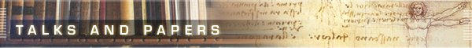

Röder, Lutz:
Transformation and Visualization of Abstractions using the Intentional Programming System.
1st International Symposium on Generative and Component-based Software Engineering, 1999.
Röder, Lutz:
Komponentenentwicklung mit dem Component Object Model.
OBJEKTspekturm, Vol. 6, No. 3, pp. 18-25, 1999.
Röder, Lutz:
Compact: Klassen für das Component Object Model.
OBJEKTspekturm, Vol. 6, No. 2, pp. 42-46, 1999.
Röder, Lutz:
Komponentensoftware für Finite Elemente Berechnungen.
Berichte zum 10. Forum Bauinformatik, pp. 170-176, 1998.
Röder, Lutz:
Eine modulare Softwarearchitektur für Berechnungen nach der Finite Elemente Methode.
Masters Thesis, Bauhaus-Universität Weimar, 1998.